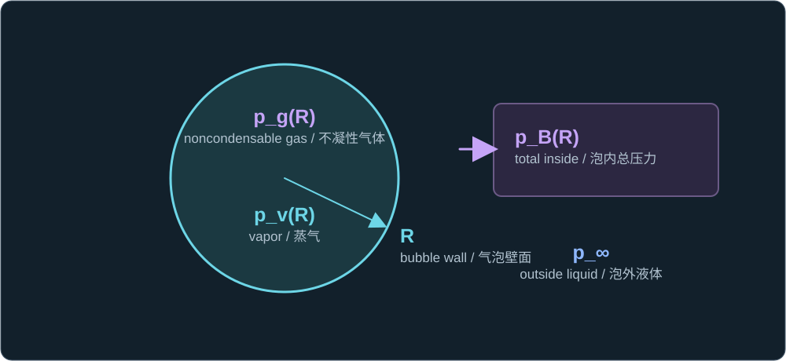
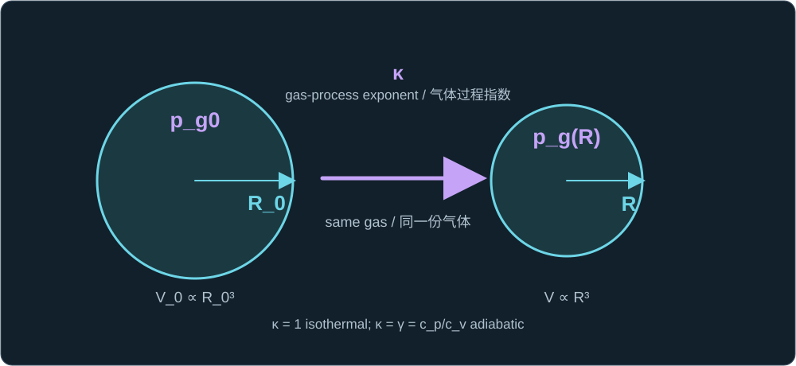
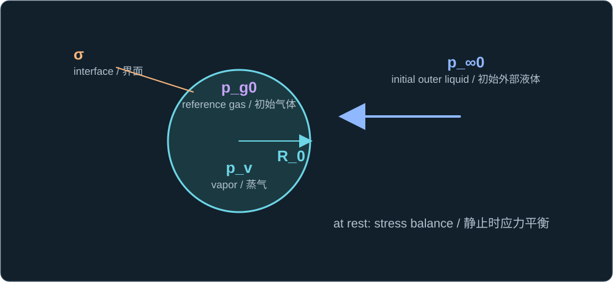

Historical lesson/review. Use the complete textbook course for the current study order. Former Chapters 4 and 5 are now Appendixes A and B.
历史课程／复习材料。当前学习顺序请使用完整教材课程。原第四、五章现为附录 A、B。
Lesson 5 related liquid acceleration to the pressure at the bubble wall. But the liquid momentum balance does not, by itself, tell us how that bubble pressure changes when the radius changes. We must supply a closure: a separate law for the bubble contents.
第五课将液体加速度与气泡壁面的压力联系起来。但仅凭液体动量平衡，还不能知道半径变化时泡内压力如何变化。我们必须提供一个闭合关系，即描述泡内物质的另一条规律。
Separate gas from vapor
区分不凝性气体与蒸气
For a simple bubble containing noncondensable gas and liquid vapor, treat the interior as approximately uniform and write its total pressure as the sum of the two partial pressures. The ambient liquid pressure p∞ is a separate quantity outside the bubble.
对于同时含有不凝性气体和液体蒸气的简单气泡，近似认为泡内状态均匀，并将总压力写成两种组分的分压之和。环境液体压力 p∞ 是气泡外部的另一个量。
pB(R) = pg(R) + pv(R)

Gas pressure p_g(R) and vapor pressure p_v(R) occupy the same bubble; p_B(R) is the total interior pressure, distinct from external p_∞.
气体分压 p_g(R) 与蒸气压 p_v(R) 同在泡内；p_B(R) 是泡内总压，与外部 p_∞ 不同。
Choose a law for a fixed amount of gas
为固定气体量选择压力规律
If the amount of noncondensable gas stays fixed and it is approximated as ideal, a common polytropic law uses a reference radius R0 and gas partial pressure pg0. Because bubble volume scales as R³, the radius enters with exponent 3κ.
如果不凝性气体的量保持固定，并近似视为理想气体，一种常用的多方规律需要参考半径 R0 及对应的气体分压 pg0。由于气泡体积随 R³ 变化，半径项的指数为 3κ。
pg(R) = pg0(R0/R)3κ

The same amount of gas changes from radius R_0 and pressure p_g0 to radius R and pressure p_g(R); κ names the assumed thermal path.
同一份气体从半径 R_0、压力 p_g0 变为半径 R、压力 p_g(R)；κ 表示假定的热过程路径。
For an isothermal ideal-gas change, κ = 1. For an ideal reversible adiabatic change, κ = γ = cp/cv. Choosing either value is a thermal modeling assumption; a single exponent need not describe rapid heating, heat transfer, and phase change through an entire collapse.
理想气体的等温变化取 κ = 1；理想可逆绝热变化取 κ = γ = cp/cv。选用哪一个值属于热过程的建模假设；在整个塌缩过程中，单一指数未必能同时描述快速升温、传热与相变。
State the vapor assumption separately
单独说明蒸气的假设
A simple model may hold pv near the saturation pressure at an approximately fixed interface temperature. In that picture vapor can evaporate during growth and condense during collapse: its mass need not be fixed. Holding vapor pressure constant and holding vapor mass constant are different approximations.
简单模型可近似认为 pv 等于近乎恒定的界面温度所对应的饱和蒸气压。在这一图像下，蒸气可在气泡生长时因蒸发而增加，在塌缩时因凝结而减少，因此其质量不必固定。保持蒸气压恒定与保持蒸气质量恒定是两种不同的近似。
With that constant-vapor-pressure approximation, the complete pressure law used by the bubble-radius equation is:
在蒸气压恒定的近似下，供气泡半径方程使用的完整泡内压力规律为：
pB(R) = pg0(R0/R)3κ + pv

Gas changes from p_g0 at R_0 to p_g(R) at R while the separate vapor term p_v stays constant; their sum is p_B(R).
气体从 R_0 时的 p_g0 变为 R 时的 p_g(R)，独立的蒸气项 p_v 保持恒定；两者之和为 p_B(R)。
The formula gives a conditional pressure after pg0, R0, κ, and pv are specified. It does not infer them from one measured maximum radius. At a reference equilibrium with the wall at rest, the initial pressure balance can constrain their sum:
指定 pg0、R0、κ 和 pv 后，该公式才给出有条件的压力预测。仅测得一个最大半径，无法反推所有这些量。若参考状态为壁面静止的平衡态，初始压力平衡可约束它们的总和：
pg0 + pv = p∞0 + 2σ/R0

At reference radius R_0, gas p_g0 and vapor p_v balance external pressure p_∞0 and surface-tension pressure 2σ/R_0 when the wall is at rest.
在参考半径 R_0 处，当壁面静止时，气体分压 p_g0 与蒸气压 p_v 平衡外部压力 p_∞0 和表面张力压差 2σ/R_0。
One check
一道检查题
If R falls from R0 to R0/2 with κ = 1 and constant pv, does the whole bubble pressure become eight times its initial value? Explain using pg0 and pv.
如果 R 从 R0 缩小到 R0/2，且 κ = 1、pv 恒定，那么整个气泡的压力是否变为初值的八倍？请用 pg0 和 pv 解释。